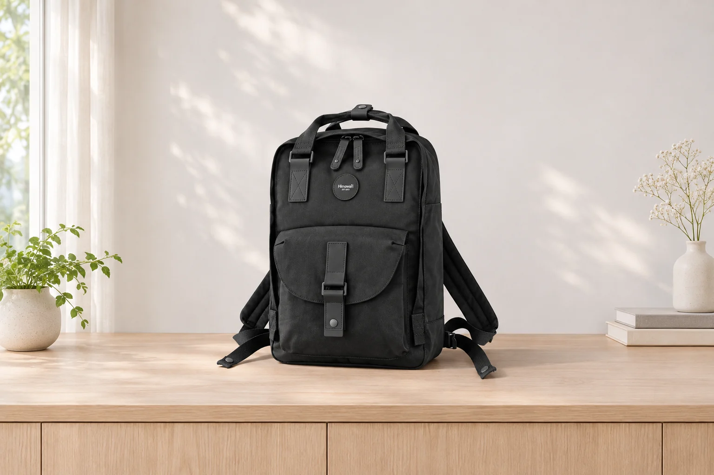
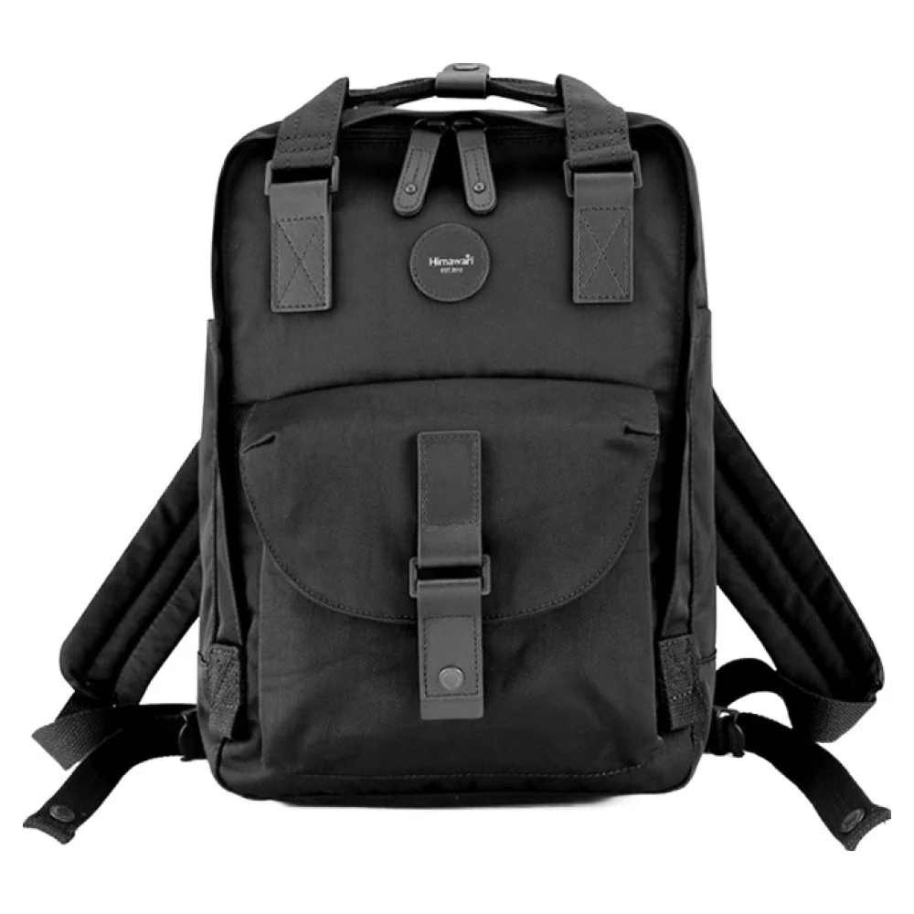
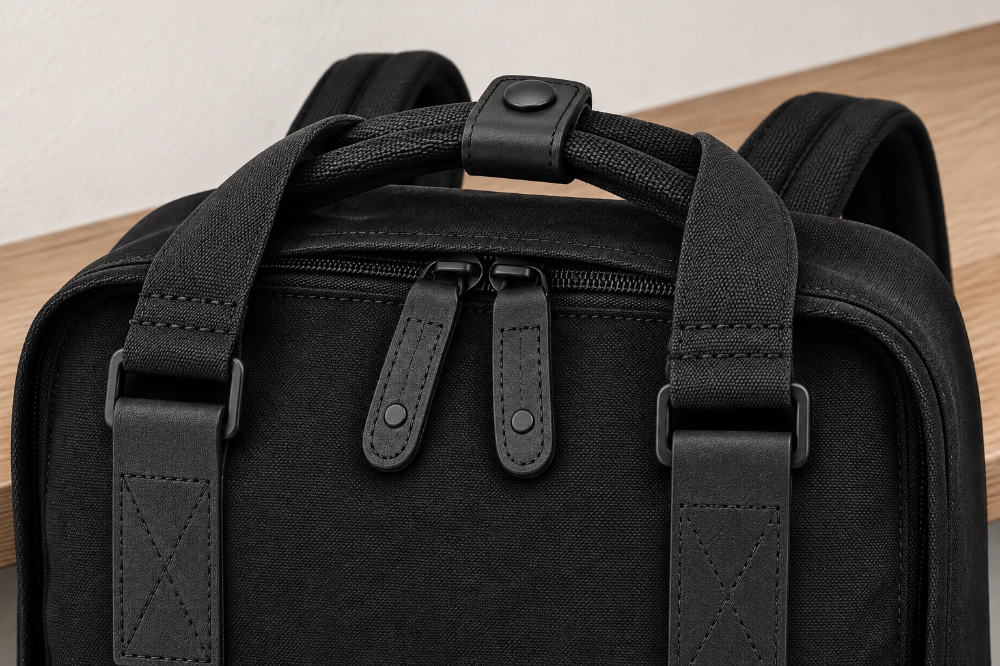

백팩을 벽에 걸어둘까, 선반에 올려둘까

현관에 돌아와 가방을 벗으면 벽걸이와 낮은 선반이 한눈에 들어옵니다. 다음 외출까지 비워 둔 백팩과 책이나 노트북을 그대로 넣어 둔 백팩은 같은 자리에 놓기 어려울 수 있습니다. 벽에 걸면 가방을 잡아주는 부위와 벽걸이가 무게를 받습니다. 선반에 두면 바닥이나 등판처럼 선반에 닿는 면이 가방을 받칩니다. 집에서 잠시 둘 자리를 고를 때는 오늘 가방 안에 무엇이 남아 있는지부터 봅니다.
히마와리 No.200 블랙의 외부 크기는 가로 28 × 세로 39 × 폭 15cm이며 제품 무게는 680g입니다. 2026년 9월 14일 제조사 카탈로그 51페이지에 실린 수치입니다. 사진에는 위쪽에 포개진 두 손잡이와 가운데 스냅 탭이 보입니다. 양옆으로 내려오는 넓은 어깨끈은 등에 멜 때 쓰는 부분입니다. 사진과 치수는 이 부위들을 구별하고 가방이 차지할 자리를 가늠하는 데 쓸 수 있습니다. 히마와리 No.200 제품 정보

아침에 다시 멜 빈 가방을 잠깐 둘 때
저녁에 교재와 물병을 꺼내고 내일 다시 쓸 가방만 현관에 남기는 날을 생각해 봅니다. 이때 벽걸이는 바닥 자리를 덜 쓰고 가방을 눈에 띄는 곳에 둘 수 있는 후보입니다. 가방의 안내에서 걸어 두는 데 쓸 수 있는 부위를 확인하고 벽걸이의 안내에서 설치된 자리에 적용되는 조건을 따로 읽습니다. 두 안내를 맞춰 볼 수 있을 때 비로소 벽걸이를 후보에 남길 수 있습니다. 빈 가방에도 자체 무게가 있으므로 안을 비웠다는 사실만으로 두 확인을 대신할 수는 없습니다.
벽걸이 앞에 서면 가방을 다시 가져갈 동작도 떠올릴 수 있습니다. 발을 옮기지 않고 몸판을 받친 채 고리에서 빼낼 수 있는지, 그 동작이 신발장 문을 여는 길과 겹치지 않는지 보는 식입니다. 고리가 벽에 붙어 있어도 백팩은 앞으로 두께가 나옵니다. No.200의 폭 15cm는 제품의 외부 치수입니다. 벽걸이의 돌출과 실제로 놓인 방향에 따라 통로에 남는 공간은 달라집니다. 앞을 지나는 사람이 가방을 비켜 가야 하는 자리라면 가까운 선반을 비교해 볼 수 있습니다.
잠깐이라는 말도 시간을 정하는 기준으로 삼기 어렵습니다. 오늘 밤이나 외출 사이처럼 다음에 꺼낼 시점이 정해져 있더라도 제품에 걸이 용도나 허용 조건이 안내되어 있는지에 따라 선택이 달라집니다. 확인된 걸이 위치가 없거나 이미 설치된 고리의 조건을 모른다면 가방 전체를 받치는 자리를 먼저 고를 수 있습니다. 여기서 No.200의 680g을 손잡이나 벽걸이의 허용 하중으로 옮겨 적을 근거는 없습니다.
고리에 들어가는 부위가 여럿 보일 때
No.200처럼 위쪽에 손잡이가 두 개 있는 백팩은 사진에서 가운데 탭과 그 아래의 손잡이를 구별할 수 있습니다. 손으로 드는 부분과 두 손잡이를 감싸고 있는 탭은 닿는 위치가 다릅니다. 스냅을 닫으면 겉보기에는 하나로 모여 보이지만 사진에서 탭의 하중이나 걸이 용도를 확인할 수는 없습니다. 앞포켓의 여밈과 주 수납부의 지퍼 손잡이도 가까이 보이는 부품일 뿐 걸이 위치를 고르는 근거가 되지는 않습니다.
어깨끈에 고리를 통과시킬 공간이 있다고 해서 그곳의 보관 용도까지 확인된 것은 아닙니다. 손으로 들어 옮길 때에는 손잡이를 감싸 쥐고 다른 손으로 몸판을 받칠 수도 있습니다. 벽에 걸린 가방은 손을 뗀 뒤에도 고리와 맞닿은 부분이 가방을 지탱합니다. 한쪽 어깨끈만 고리에 넣으면 가방이 어느 쪽으로 기울어 주변 물건과 닿을지도 놓는 자리에서 달라집니다. 손잡이와 어깨끈 가운데 어느 쪽이 더 오래 버틴다고 사진으로 판단할 수는 없습니다.

제품 설명에서 걸어 두는 부위를 찾지 못했다면 무엇을 묻는지 좁혀 보세요. No.200 윗부분 사진에서 두 손잡이와 스냅 탭을 각각 가리키며 빈 백팩을 잠시 보관할 때 사용해도 되는 곳이 안내되어 있는지 물을 수 있습니다. 판매처에서 가방 쪽 조건을 확인했다면 설치된 벽걸이의 상태와 사용 범위는 그 고리의 안내에서 봅니다. 고리의 표기나 가방 자체 무게 한 가지만으로 그 조합의 조건이 모두 확인되지는 않습니다.
저녁에 한 번 더 열 가방은 선반에서
숙제를 마치고 책을 되넣거나 출근 전에 기기를 꺼낼 때는 가방을 여는 동안 본체를 어디에 받칠지부터 생각해 봅니다. 벽에 걸린 채 무거운 파일을 꺼내려면 한 손이 파일로 가는 동안 다른 손으로 가방을 잡게 될 수 있습니다. 내려놓고 다시 걸어야 한다면 처음부터 손이 닿는 선반에 두는 편이 간단합니다. 서류와 기기가 든 가방을 벽에 걸 수 있는지는 짐을 넣은 상태에 맞는 제품 안내가 있어야 판단할 수 있습니다.
선반에는 세워 두는 방향과 눕혀 두는 방향이 있습니다. 세울 때는 바닥이 받쳐지는지와 앞포켓이 선반 밖으로 얼마나 나오는지 함께 봅니다. 눕힐 때는 등판 아래 어깨끈이 한데 뭉쳐 가방이 기우는지, 앞면이 아래로 향했다면 앞포켓의 돌출 부품이 선반에 눌리는지 살핍니다. 서가 한 칸에 넣고 문을 닫는 경우라면 제품 치수 외에 손을 넣어 다시 꺼낼 여유도 필요합니다. No.200의 세로 39cm를 기준으로 세워 둘 칸을 비교할 수 있습니다. 가방 위로 손을 넣어 손잡이를 잡을 여유가 있는지는 실제 자리를 봐야 합니다.
가방이 어느 정도 비어 있을 때는 선반에서 스스로 서는 모양도 달라질 수 있습니다. 세워 두었을 때 앞으로 기울면 평평한 면이 받쳐지는 방향으로 바꿔 볼 수 있습니다. 선반에 물건이 많이 쌓여 가방 바닥이 절반만 닿거나 매번 다른 물건을 먼저 빼야 한다면 그 칸을 고정된 자리로 삼기 어렵습니다. 필요할 때 가방을 열 수 있을 만큼 앞쪽을 비우고, 가방과 그 안의 짐이 놓인 상태에 맞춰 선반의 사용 조건을 확인합니다.
같이 쓰는 현관이라면 가방이 돌아올 때를 봅니다
빈 가방을 벽에 둘 수 있는 조건을 확인해도 다음날 저녁에 같은 상태로 돌아온다는 보장은 없습니다. 오늘은 책을 다 꺼냈지만 내일은 과제와 보조배터리를 남겨둘 수 있습니다. 가족이 함께 쓰는 현관이라면 비워 둔 가방을 잠깐 거는 자리와 짐이 들어 있는 가방을 내려놓을 자리를 서로 알아보기 쉽게 정할 수 있습니다. 한쪽 자리에 무엇을 두기로 했는지 알면 매번 가방을 들어보고 옮기는 일도 줄어듭니다.
옆 고리에 가족의 외투가 걸리는 저녁도 생각해 봅니다. 코트 자락이 백팩의 손잡이를 가리면 가방만 집으려다 외투를 먼저 들춰야 할 수 있습니다. 아침마다 두 물건을 한꺼번에 챙기는 집이라면 신발을 신기 전에 가방을 꺼낼 쪽과 외투를 벗겨 낼 쪽을 나누어 둘 수 있습니다. 고리가 남아 있어도 두 동작이 자꾸 겹친다면 가방은 선반에 두는 편이 편할 수 있습니다.
두 자리를 다 마련할 필요는 없습니다. 자주 여는 가방이거나 걸이 조건을 확인하기 어려운 가방이라면 손이 닿는 높이에서 본체를 받쳐 주는 선반 한 곳으로도 충분할 수 있습니다. 반대로 빈 백팩을 자주 꺼내고 해당 부위와 벽걸이의 조건이 확인된 집이라면 걸이도 비교할 만합니다. 문을 열고 필요한 짐을 꺼낸 뒤 가방을 다시 집는 평소 저녁을 떠올려 보면 어느 자리가 덜 번거로운지 구체적으로 고를 수 있습니다.